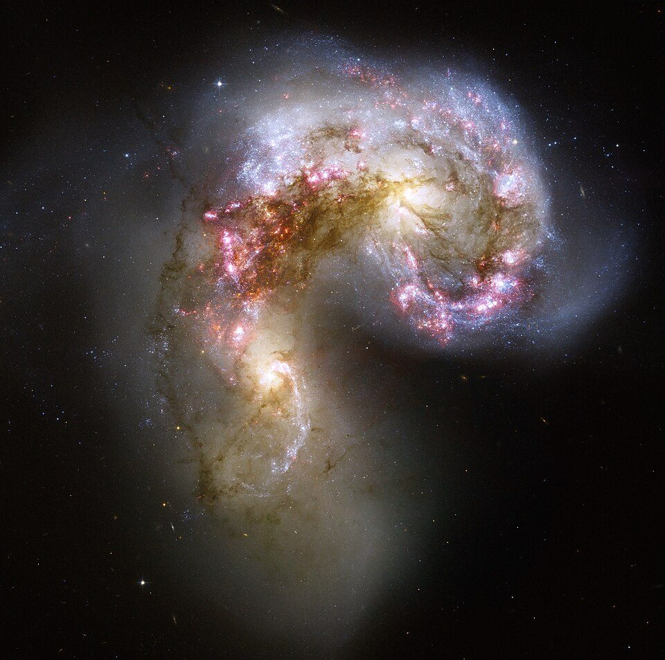

Choques de galaxias
Cuando dos galaxias se encuentran, sus estrellas apenas chocan, pero el gas se enciende en millones de estrellas nuevas.


Las galaxias no están quietas: se mueven, se atraen y, a menudo, chocan. De hecho, chocar y fusionarse es la forma principal en que crecen. Nuestra propia Vía Láctea es el resultado de muchas fusiones a lo largo de miles de millones de años.
Un choque sin golpes
Aunque suene violento, cuando dos galaxias chocan sus estrellas casi nunca se tocan. La distancia entre estrellas es tan enorme que, si el Sol fuera una pelota de tenis en Madrid, la estrella más cercana sería otra pelota en Lisboa. Las galaxias se atraviesan como dos enjambres.
Lo que sí choca es el gas. Las nubes se comprimen, se calientan y forman estrellas nuevas a un ritmo cientos de veces mayor de lo normal: es un brote estelar. La gravedad estira las galaxias y les arranca largas colas de marea de estrellas y gas que pueden medir cientos de miles de años luz.
Las Antenas
A 45 millones de años luz, dos galaxias espirales llevan unos cientos de millones de años chocando. Vistas con un telescopio pequeño, sus dos largas colas de marea recuerdan las antenas de un insecto. En su centro, el Hubble ha encontrado más de mil cúmulos de estrellas jóvenes y brillantes formados por el choque.
El Quinteto de Stephan
Cinco galaxias aparentemente juntas en la constelación de Pegaso, descubiertas por Édouard Stephan en 1877. Cuatro de ellas forman un grupo que interactúa de verdad; la quinta está mucho más cerca de nosotros y solo coincide en la misma línea de visión. Fue una de las primeras imágenes del telescopio James Webb, en julio de 2022.


Cómo termina un choque
Tras varias pasadas, que pueden durar cientos de millones de años, las galaxias acaban fundidas en una sola, normalmente una elíptica grande. Los agujeros negros de sus centros también se hunden hacia el medio y terminan fusionándose, emitiendo un torrente de ondas gravitacionales.
Nuestro turno
La Vía Láctea está ahora mismo engullendo galaxias enanas, como la de Sagitario. Y en el futuro lejano podría chocar con Andrómeda. Si ocurre, el cielo nocturno de un hipotético habitante de la Tierra se llenaría durante millones de años de nuevas nebulosas y estrellas brillantes.
Vídeos para entenderlo mejor
- Andrómeda Chocará contra la Vía Láctea: ¿Qué Sucederá Exactamente?QuantumFracture · 8,7 M visualizaciones
- ¿Qué pasará cuando la Vía Láctea choque con Andrómeda?Astronomiaweb · 259 mil visualizaciones
Los vídeos son de YouTube y de sus autores. Se cargan solo al pulsar sobre ellos. Ver todos los vídeos →